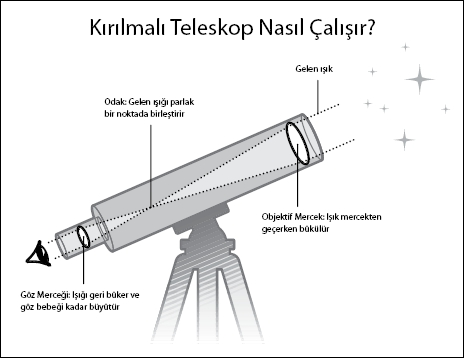

Gözlerimizi göklere açan icat
Dr. Stuart Clark, The Big Quesitons: The Universe (Büyük Sorular:
Evren) ve The Sun Kings (Güneş Kralları) gibi kitapların yazarı
1564'te eğik kulesiyle tanınan Pisa'da doğan Galileo Galilei ruhban sınıfına girmek isterken matematikçi oldu. Çalışmaları kuyrukluyıldızlardan gelgitlere kadar geniş bir bilimsel yelpazeyi kapsıyordu. 1609'da bilime yaptığı başlıca katkılardan biri Flaman bir gözlük yapımcısından esinlenmişti.
"Teleskop, çıplak gözle görünenin ötesine geçmemizi sağladı. Göremediğimiz kimi nesnelerin gökyüzünde saklı olduğunu bize göstererek yalnızca bilimsel devrimi değil, ayrıca dünyayı kültürel algılayışımızı da hızlandırdı. Evrendeki yerimizi yeniden değerlendirmemizi sağladı."
Stuart Clark
| Bunları Biliyor Muydunuz? | |
| 1990'da yapılan Hubble Uzay Teleskopu uzayda astronotlara hizmet vermek üzere yapılan tek teleskoptur. Buraya kadar gayet iyi. Fakat daha sonra ana aynanın yanlış yerleştirildiği ortaya çıktı ve 1993 yılının Aralık ayında Endeavour uzay mekiğinin mürettebatı tarafından hata düzeltildi. |
İçbükey ve dışbükey mercekli gözlükler asırlardır kullanılıyordu, fakat Hans Lippershey bir borunun ucuna içbükey mercek, diğer ucuna da dışbükey mercek yerleştirdi. Küçük dürbününün bir ucundan içeri baktığında, nesneler olduğundan neredeyse üç kat daha büyük görünüyordu. Böylece teleskop doğdu.
Galileo bu cihazı duyduğunda ondaki büyük askeri potansiyeli fark etti. Eğer Osmanlı akınları millerce uzaktan tespit edilirse, saldırılara hazırlanmak için daha fazla zaman kazanabilirlerdi. Galileo, 1609 yılının yaz mevsiminde kendi teleskobunu yapmaya koyuldu. Teleskobu sekiz kat büyütebilir hale getirdiğinde, onu Venedik Dükası'na gösterdi. İcattan çok etkilenen düka, Galileo'ya hayat boyu güvence sağlayan sabit bir maaş ve Venedik'te sabit bir ikametgah vermeyi teklif etti.
Özgürce bilim yapma isteğindeki Galileo bu teklifi geri çevirdi. Teleskobunun başka bir kullanım alanını daha buldu. Onu gökyüzüne çevirdiğinde büyütme gücü, Satürn'ün halkaları, Jüpiter'in dört uydusu ve komşumuz ayın yüzeyindeki garip şekiller gibi daha önce kimsenin görmediği manzaraları görmesini sağladı.
Galileo, Ay'ın mükemmel bir küre olmadığını, günümüzde asteroitlerin çarpmasıyla oluştuğunu bildiğimiz kraterlerle kaplı olduğunu görebiliyordu. O zamanlar insanlar yalnızca Dünya'da bulunan varlıkların değişime veya bozulmaya uğradığına inanıyorlardı. Gök cisimlerinin tam birer küre olmayıp kusurlu oluşları fikri dine küfretmekle aynıydı.
Bugün Ay'ı bu kadar ayrıntılı gözlemleyen ilk kişinin Galileo olmadığını biliyoruz. İngiliz astronom Thomas Harriot, Galileo'nun kendi çizimlerini yayınlamasından iki ay önce Ay'ın haritalarını içeren bir günlük yazmıştı. Fakat Galileo her zaman kendi tanıtımını iyi yapan ve çevresi geniş biri olmuştu. Bu sayede pek çok fikri kabul görmüş, hatta 1611'de Papa'yla başarılı bir görüşme bile yapmıştı. Fakat sonunda kilisenin sınırlarını çok zorladı.
Dediğim dedik İtalyan önce bazı Cizvit astronomları fena kızdırdı. Sonra Kopernik'in merkezde güneşin olduğu Güneş Sistemi modelini lafını sakınmadan savunduğu için iyice göze batar oldu, ki sonunu hazırlayan da buydu. Fırsatı kaçırmayan Engizisyon, Kopernikçiliği destekleme yasağını ihlal ettiği için onu suçlu buldu ve Galileo son günlerini ev hapsinde geçirdi.
